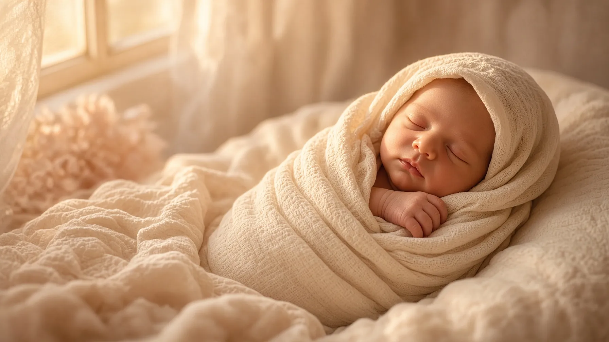
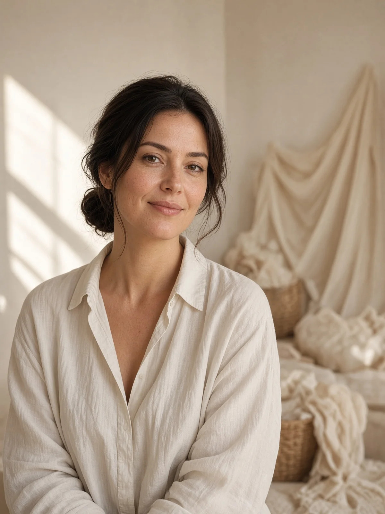

8 лет
с младенцами
Своя студия
в Брянске
5–21 день
newborn
Без предоплаты
запись заранее
5–21 день
Новорождённые
Снимаю малышей с 5 по 21 день. Иногда можно и до месяца — если сон ещё глубокий. Съёмка дома или в моей студии: тихо, безопасно, без спешки.
- Образы и цвета согласовываем заранее
- Дома или в студии — как удобнее семье
- Безопасная обстановка и опыт работы с младенцами
3 месяца – 2 года
Малыши
Студия для малышей: ловим улыбки, забавы и первые шаги. Реквизит и одежду даю я — костюмы, тематические сеты, молочные ванны, годик и два годика.
- Реквизит и костюмы включены
- Молочные ванны и тематические образы
- Съёмка в уютной детской студии
Как проходит съёмка
Просто и спокойно
01
Обсуждаем
Идеи, возраст, студия или дом. Образы согласовываю заранее — присылаю примеры.
02
Снимаем
В студии или у вас дома. Темп под малыша: без суеты, с паузами на кормление и сон.
03
Отдаю кадры
Обработка и цифровые файлы. Вы получаете готовые фотографии — и спокойный процесс.

Фотограф
Инна Савина
8 лет с младенцами. Своя детская студия в Брянске. Семьи приходят не только за кадрами — за спокойным процессом.
Семьи
Отзывы обо мне
«Инна сразу нашла подход к малышу. Съёмка прошла спокойно, реквизит красивый, кадры — те самые, которые хочется повесить дома.»
«Годик снимали в студии. Костюмы уже были, ничего возить не пришлось. Дочь смеялась почти всю съёмку — это видно на фото.»
«Записались заранее, предоплату не просили. Приехали домой к нам с новорождённым. Очень бережно и профессионально.»